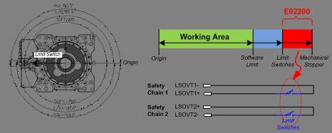
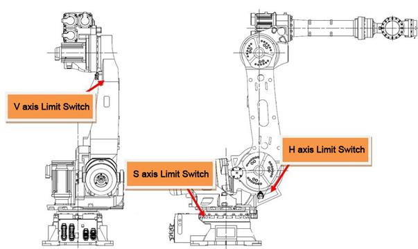
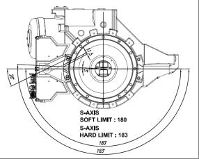

기존 에러코드: E0002 하드웨어 리밋스위치 작동중
1.1.25.1. 개요
로봇 각 축의 동작영역 끝에 설치한 리밋스위치가 작동하였습니다. 안전을 위하여 로봇은 즉각적으로 정지하며 적절한 방법으로 안전한 동작영역으로 이동할 때까지는 정상적인 운전을 할 수 없습니다.
1.1.25.2. 원인 및 점검방법
|
(1) 로봇이 하드웨어적 동작영역을 이탈하였습니다.
(2) 동작영역 내부로 로봇을 이동시키십시오. n 동작영역 이탈시의 복구방법 |
(1) 로봇이 하드웨어적 동작영역 밖으로 이탈하였습니다.
실제로 로봇이 동작영역 밖으로 벗어났는지 다시한번 확인하십시오. 소프트리밋 에러도 동시에 발생하였을 것이며 로봇은 최대 동작영역을 이탈한 것입니다. 적절한 조작으로 로봇을 동작영역 안으로 이동시키십시오.

그림 1.118 E02200 본체 리밋SW 작동중 발생
동작영역은 로봇 모델에 따라 다릅니다. 따라서 리밋스위치의 설치위치도 다를 수 있으므로 해당 기구 보수설명서에서 기재된 “동작범위 제한” 부분을 참조하십시오.

그림 1.119 하드웨어 리밋스위치 설치 위치의 예 (HS165/HS200)

그림 1.120 하드웨어 리밋스위치 작동범위의 예 (HS165/HS200 S축)
(2) 동작영역 내부로 로봇을 이동시키십시오.
다음의 동작영역 이탈시 복구방법을 참조하여 동작영역 안으로 로봇을 이동시키십시오.
n 동작영역 이탈시의 복구방법
하드웨어 리밋스위치가 걸려있는 상태에서 로봇을 움직이기 위해서는 다음과 같은 조건과 순서로 실행해야 합니다.
A) 수동모드에서 시스템 모드로 진입합니다.
B) 티칭펜던트에서 인에이블링스위치를 잡습니다.
C) 이 상태에서 모터ON 시킵니다.
D) 조그키를 사용하여 로봇을 동작영역 안으로 이동시킵니다.